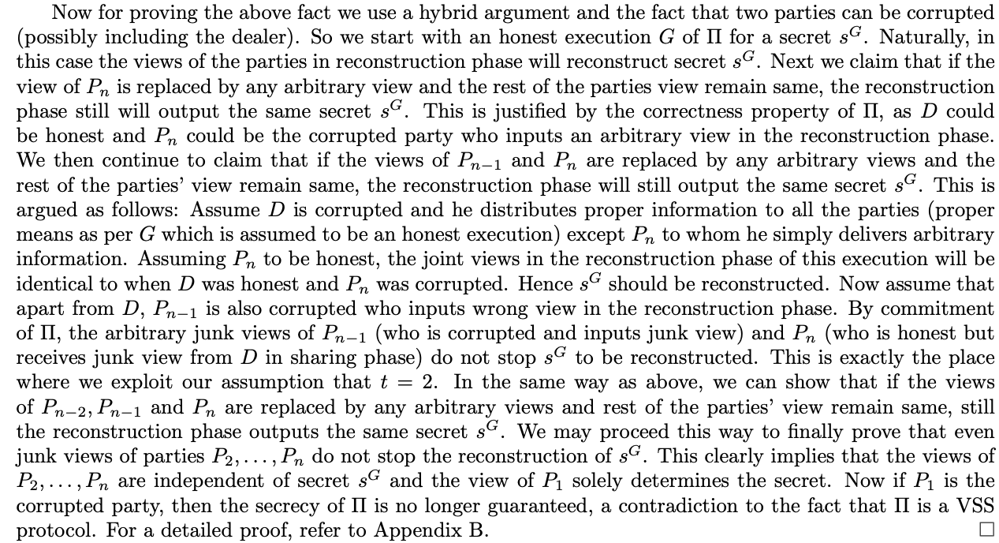

Computational Verifiable Secret Sharing Revisited
Paper: [1]
Summary
- Earlier works used homomorphism among commitments. This work shows that it is not necessary for the commitments to be homomorphic in the synchronous or asynchronous communication model. This work presents VSS schemes based only on the definitional properties of commitments.
- They present new VSS schemes based only on the properties of commitments that are almost as good1 as existing VSS schemes based on homomorphic commitments.
- They present an impossibility for one round computational VSS for \(t > 1\), or \(n\le 3t\) in any network model. They present a special 1 round VSS protocol for \(t=1\) and \(n>5\) and the dealer is one of the participants.
- In the synchronous network model, they show that the lower bound for the round complexity for computational VSS is two rounds.
- They also present the first 2 round VSS scheme for \(n > 2t\) using homomorphic commitments.
Model
- The adversary is static and computationally bounded.
- Both synchronous and asynchronous models assume a broadcast channel.
- Synchronous model: Links between dealer and parties are bi-directional, authenticated and private. Adversary is rushing and adaptive.
- The VSS that this paper considers allows the reconstruction protocol to output \(\bot\).
VSS Definition
- Protocol has two phases: Sharing and Reconstruction. In the sharing phase, each party has a view \(v_i\). In the reconstruction phase, all parties output their views and reconstruction the secret. I find this definition a little weird, may cause problems for concurrent security.
- An $(n,t)-$VSS is secure if it satisfies:
- Secrecy: Identical distribution independent of the secret \(s\)
- Correctness: If dealer is honest, all parties output the secret that the dealer proposed
- Commitment: If dealer is dishonest, at the end of the sharing phase there is a value (maybe \(\bot\)) such that at the end of reconstruction all parties output that value.
- A protocol is efficient if the total computation and communication performed by all the honest parties is polynomial in the number of parties and the security parameter.
Commitment Scheme
- Two parties: committer and verifier
- Two phases:
- Commit phase: Given a message \(m\), you get \((Com, m, d) \leftarrow Commit(m)\). Here \(Com\) is the commitment, \(m\) is the message and \(d\) is the witness (optional).
- Open phase: Committer opens commit \(Com\) by revealing \((m,d)\) to a verifier. Verifier can check if the message is consistent with the commitment with \(m = Open(C,m,d)\).
- Example: Let \(H\) be a hash function. Define \(Commit(m) := (H(m,r), m, r)\). Opening involves revealing \(m\) and \(r\). Verify involves checking \(Com = H(m,r)\).
Synchronous VSS
2-round VSS for \(n>2t\) in Synchrony from any commitment
Standard VSS is:
- Distribution: Dealer sends shares and publishes commitments.
- Accuse: Parties accuse.
- Resolution: Dealer resolves accusations.
Main idea in this protocol: It is impossible to merge distribution and accuse steps. So here is an alternate mechanism:
- All parties commit to randomness and send randomness to dealer.
- Dealer uses randomness as blinding pad and bivariate polynomials and publishes the shares.
Sharing Protocol

Example
Let \(n=5\) and \(t=2\).
- Round 1, Dealer:
- Dealer chooses a random symmetric bivariate polynomial \(F(x,y)\) of degree \(2\) such that \(F(0,0) = s\).
- Compute \(Com_{1,1}, f_{1,1}, r_{1,1}\), \(Com_{2,1}, f_{2,1}, r_{2,1}\), \(Com_{3,1}, f_{3,1}, r_{3,1}\), \(Com_{4,1}, f_{4,1}, r_{4,1}\), \(Com_{5,1},f_{5,1},r_{5,1}\), \(Com_{2,2}, f_{2,2}, r_{2,2}\), \(Com_{3,2},f_{3,2}, r_{3,2}\), \(Com_{4,2},f_{4,2},r_{4,2}\), \(Com_{5,2},f_{5,2},r_{5,2}\), \(Com_{3,3},f_{3,3},r_{3,3}\), \(Com_{4,3},f_{4,3},r_{4,3}\), \(Com_{5,3},f_{5,3},r_{5,3}\), \(Com_{4,4},f_{4,4},r_{4,4}\), \(Com_{5,4},f_{5,4},r_{5,4}\), \(Com_{5,5},f_{5,5},r_{5,5}\).
- Assign \(Com_{1,2} = Com_{2,1}\), \(Com_{1,3} = Com_{3,1}\), \(Com_{1,4}=Com_{4,1}\), \(Com_{1,5}=Com_{5,1}\), \(Com_{2,3}=Com_{3,2}\), \(Com_{2,4}=Com_{4,2}\), \(Com_{2,5}=Com_{5,2}\), \(Com_{3,4}=Com_{4,3}\), \(Com_{3,5}=Com_{5,3}\), \(Com_{4,5}=Com_{5,4}\).
- Send \((f_{1,1}, r_{1,1}), (f_{1,2},r_{1,2}), (f_{1,3}, r_{1,3}), (f_{1,4},r_{1,4}), (f_{1,5},r_{1,5})\) to \(P_{1}\).
- Send \((f_{2,1}, r_{2,1}), (f_{2,2},r_{2,2}), (f_{2,3}, r_{2,3}), (f_{2,4},r_{2,4}), (f_{2,5},r_{2,5})\) to \(P_{2}\).
- Send \((f_{3,1}, r_{3,1}), (f_{3,2},r_{3,2}), (f_{3,3}, r_{3,3}), (f_{3,4},r_{3,4}), (f_{3,5},r_{3,5})\) to \(P_{3}\).
- Send \((f_{4,1}, r_{4,1}), (f_{4,2},r_{4,2}), (f_{4,3}, r_{4,3}), (f_{4,4},r_{4,4}), (f_{4,5},r_{4,5})\) to \(P_{4}\).
- Send \((f_{5,1}, r_{5,1}), (f_{5,2},r_{5,2}), (f_{5,3}, r_{5,3}), (f_{5,4},r_{5,4}), (f_{5,5},r_{5,5})\) to \(P_{5}\).
- Broadcast \(Com_{i,j}\) for \(i,j \in [5]\).
- Round 1, Others:
- Choose two sets of \(5\) random values \(p_{i1}, p_{i2},\ldots,p_{i5}\) and \(g_{i1},g_{i2},\ldots,g_{in}\).
- Compute \(PCom_{i1}, (p_{i1},q_{i1}), PCom_{i2},(p_{i2},q_{i2}), \ldots, PCom_{i5}, (p_{i5},q_{i5})\) where \(PCom_{ij}=H(p_{ij},g_{ij})\)
- Compute \(GCom_{i1}, (g_{i1},h_{i1}), GCom_{i2},(g_{i2},h_{i2}), \ldots, GCom_{i5}, (g_{i5},h_{i5})\) where \(GCom_{ij}=H(g_{ij},h_{ij})\)
- Send \((p_{i1},q_{i1}),(p_{i2},q_{i2}),(p_{i3},q_{i3}),(p_{i4},q_{i4}),(p_{i5},q_{i5})\) and \((g_{i1},h_{i1}),(g_{i2},h_{i2}),(g_{i3},h_{i3}),(g_{i4},h_{i4}),(g_{i5},h_{i5})\) to the dealer
- Broadcast \((PCom_{i1},PCom_{i2},PCom_{i3},PCom_{i4},PCom_{i5})\) and \((GCom_{i1},GCom_{i2},GCom_{i3},GCom_{i4},GCom_{i5})\)
- Round 2, Dealer:
- Verify \(PCom_{i1}=H(p_{i1},q_{i1})\), \(PCom_{i2}=H(p_{i2},q_{i2})\), \(PCom_{i3}=H(p_{i3},q_{i3})\), \(PCom_{i4}=H(p_{i4},q_{i4})\), \(PCom_{i5}=H(p_{i5},q_{i5})\)
- Verify \(GCom_{i1}=H(g_{i1},h_{i1})\), \(GCom_{i2}=H(g_{i2},h_{i2})\), \(GCom_{i3}=H(g_{i3},h_{i3})\), \(GCom_{i4}=H(g_{i4},h_{i4})\), \(GCom_{i5}=H(g_{i5},h_{i5})\)
- Round 2, Others:
Impossibility results for 1-round VSS
Theorem 3.2. $1$-round VSS is impossible for \(t>1\) and \(n>5\), irrespective of the number of rounds in the reconstruction phase.
- Idea in the proof Proof by contradiction. Let \(\Pi\) be a VSS protocol. Say \(t=2\). Let \(P_{1}\) be a party that is not the dealer. Since this is a 1-round VSS protocol, \(P_1\) receives one message from the dealer and terminates without hearing from any other party. Unknown magic: They show that for any execution if party \(P_1\) receives some particular piece of information from the dealer, then she will reconstruct a particular secret irrespective of what \(P_2\), \(\ldots\), \(P_n\) has received from the dealer. In that case, they show that \(P_1\) can be the sole corruption, and thus breach secrecy when \(t=1\).

Theorem 3.3. 1-round VSS is impossible for \(n\le 3t\), irrespective of the number of rounds in the reconstruction phase.
References
[1] Michael Backes, Aniket Kate, and Arpita Patra. 2011. “Computational Verifiable Secret Sharing Revisited.” http://link.springer.com/10.1007/978-3-642-25385-0_32.
Footnotes:
1
How good?